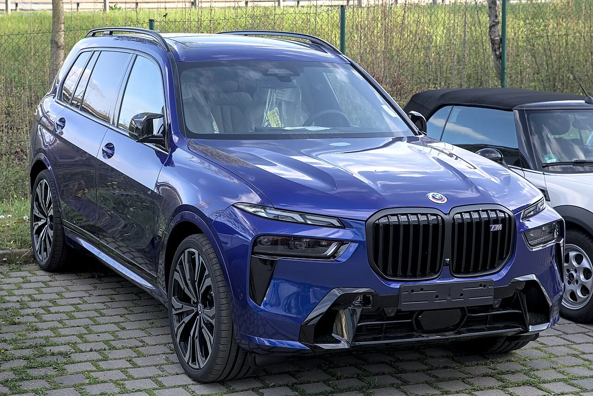

▲ BMW X7 — 이번 온라인 한정판 3종 중 국내 배정 물량이 40대로 가장 많은 모델이다
BMW코리아가 8월 11일 오후 3시부터 BMW 온라인샵을 통해 한정판 3종을 판매합니다. 7시리즈 네로 루쏘 에디션, X7 xDrive40d M 스포츠 프로 스카이스크래퍼 그레이 에디션, M340i xDrive 투어링 프로 M 퍼포먼스 파츠 에디션까지 세 모델을 합쳐 국내 배정 물량은 총 89대. 전시장 상담 없이 온라인에서만 구매할 수 있다는 점이 이번 판매 방식의 핵심입니다.
1. 왜 매장이 아니라 온라인인가
한정판을 온라인으로만 판매하는 방식은 수입차 브랜드 사이에서 점점 늘어나는 추세입니다. 물량이 적은 한정판을 특정 딜러 지점에 몰아주면 지역 간 형평성 논란이 생기기 쉽고, 사전 예약 경쟁도 과열되기 마련입니다. 온라인 동시 오픈 방식은 이런 문제를 피하면서도, '선착순'이라는 긴장감을 통해 화제성을 키우는 효과가 있습니다. BMW코리아가 이번 3종을 8월 11일 오후 3시라는 특정 시각에 맞춰 동시에 온라인샵에 올리는 것도 같은 맥락으로 풀이됩니다.
2. 7시리즈 네로 루쏘 — 세계 135대 중 29대가 한국행
가장 상징적인 모델은 7시리즈 네로 루쏘 에디션입니다. 전 세계 생산량이 단 135대인데, 이 중 29대가 국내에 배정됐습니다. 세부적으로는 740i xDrive 19대(1억9,600만원), 740d xDrive 10대(1억7,070만원)로 나뉩니다. 전 세계 물량의 5분의 1이 넘는 수량이 한국 시장에 할당됐다는 점에서, BMW코리아가 이 에디션에 걸고 있는 기대를 짐작할 수 있습니다. 플래그십 세단인 7시리즈에 걸맞게 가격도 이번 3종 중 가장 높습니다.
| 모델 | 국내 물량 | 가격 |
|---|---|---|
| 7시리즈 네로 루쏘(740i xDrive) | 19대 | 1억9,600만원 |
| 7시리즈 네로 루쏘(740d xDrive) | 10대 | 1억7,070만원 |
| X7 스카이스크래퍼 그레이 | 40대 | 1억6,180만원 |
| M340i 투어링 M퍼포먼스 파츠 | 20대 | 9,950만원 |
| 합계 | 89대 | - |

▲ BMW X7 측면부 — xDrive40d M 스포츠 프로 트림 기반의 스카이스크래퍼 그레이 에디션이 40대 한정으로 판매된다
3. X7 스카이스크래퍼 그레이 — 가장 많은 40대
이번 3종 중 국내 배정 물량이 가장 많은 모델은 X7 xDrive40d M 스포츠 프로 스카이스크래퍼 그레이 에디션입니다. 40대가 배정됐고, 가격은 1억6,180만원입니다. '스카이스크래퍼 그레이'라는 전용 컬러명에서 짐작할 수 있듯, 대형 SUV인 X7의 존재감을 강조하는 방향으로 꾸며진 에디션으로 추정됩니다. 3종 가운데 가장 많은 물량이 배정됐다는 점에서, BMW코리아가 이 모델을 판매량 측면에서 핵심 축으로 보고 있다는 해석이 가능합니다.

▲ BMW X7 실내 — 대형 SUV 특유의 넉넉한 실내 공간이 특징이다
4. M340i 투어링 M퍼포먼스 파츠 — 막내지만 만만찮은 가격
세 모델 중 가장 저렴하면서도 가장 개성 있는 모델은 M340i xDrive 투어링 프로 M 퍼포먼스 파츠 에디션입니다. 20대 한정으로 9,950만원에 판매됩니다. 왜건형 바디인 투어링에 M퍼포먼스 파츠를 더한 구성으로, 실용성과 스포츠성을 동시에 원하는 소비자를 겨냥한 모델로 보입니다. 3종 중 유일하게 1억원을 넘지 않는 가격대지만, 왜건 특유의 희소성을 감안하면 결코 만만한 가격은 아닙니다.
5. 8월 11일 오후 3시, 온라인에서만
세 모델 모두 판매 시작 시각은 동일합니다. 8월 11일 오후 3시, BMW 온라인샵을 통해서만 구매할 수 있습니다. 오프라인 전시장에서는 사전 상담이나 계약이 불가능한 만큼, 관심 있는 소비자라면 온라인샵 접속 준비가 필수입니다. 특히 7시리즈 네로 루쏘처럼 전 세계 물량이 135대뿐인 에디션은 판매 개시와 동시에 물량이 소진될 가능성도 배제할 수 없습니다.